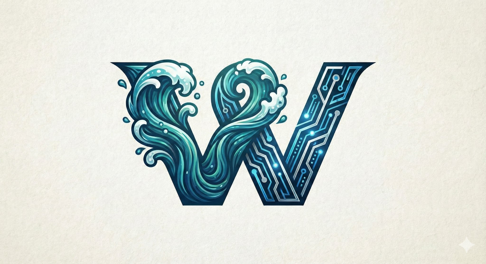

Azure Cloud Architect
Navy Veteran · Cloud Engineer · Builder
Twenty years of precision electronics and systems experience in the U.S. Navy, now channeled into Azure cloud architecture, infrastructure as code, and government-grade cloud solutions.

Background
The left side of the W is ocean — twenty years of service. The right side is circuit — the architecture of what comes next.
Twenty years as a U.S. Navy Electronics Technician built a foundation of precision, discipline, and systems thinking under pressure. From shipboard electronics to complex troubleshooting in demanding environments, that experience shapes how I approach every technical challenge: methodically, with full accountability for outcomes.
Now directing that discipline toward Azure cloud engineering and architecture. Building infrastructure as code with Bicep and GitHub Actions, pursuing the AZ-104 and AZ-305 certifications, and targeting Azure Government and FedRAMP workloads where a security clearance and military background are genuine differentiators — not just resume lines.
Technical Stack
Hands-on skills built in real Azure environments, not just coursework.
Certification Roadmap
A deliberate path from foundations to solutions architecture.
Portfolio
Real infrastructure. Real deployments. Built to learn by doing.
Contact
Open to Azure cloud roles, government cloud consulting, and conversations about the Microsoft ecosystem.